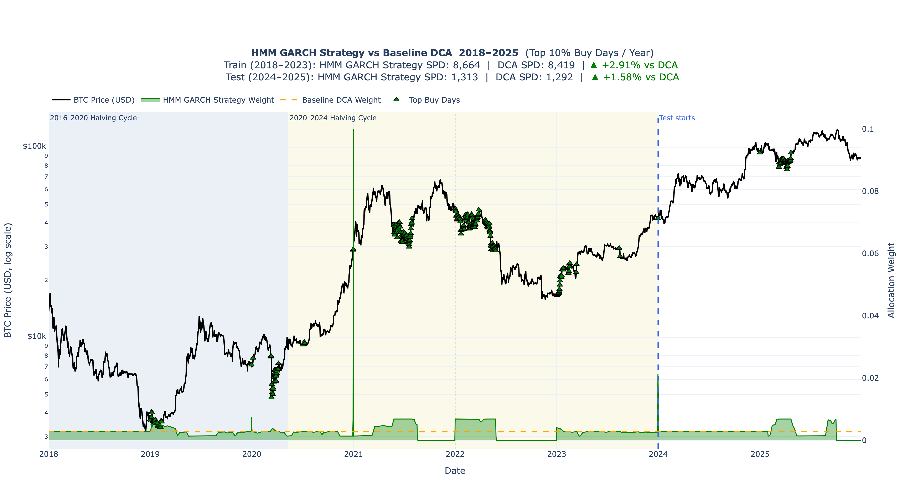
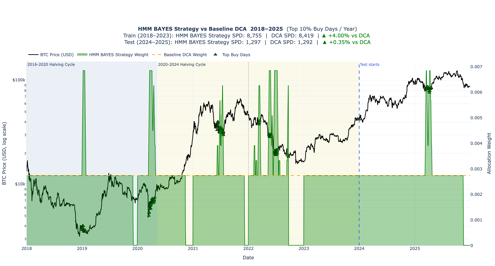

Adaptive Bitcoin Accumulation Using Hidden Markov Models, GARCH Volatility, and Bayesian Networks
Introduction
Dollar-Cost Averaging (DCA) is one of the most widely recommended strategies for accumulating Bitcoin. By investing a fixed amount at regular intervals, investors reduce the impact of market timing and benefit from long-term exposure to the asset.
Despite its simplicity and robustness, traditional DCA treats every investment period equally. Whether Bitcoin is historically cheap, historically expensive, experiencing extreme volatility, or trading in a speculative euphoric regime, the investor commits exactly the same amount of capital.
This raises an important question:
Can we improve Bitcoin accumulation by dynamically adjusting contributions according to market conditions while preserving the simplicity of DCA?
To investigate this question, we developed two adaptive accumulation frameworks:
- HMM-GARCH Strategy
- HMM-Bayesian Strategy
Both approaches leverage market regimes, valuation metrics, and volatility information to modify accumulation weights over time.
The objective is not to predict short-term price direction. Instead, the goal is to identify periods that historically offered more attractive Bitcoin accumulation opportunities and allocate capital more efficiently during those periods.
High Level Video Explainer
Prefer watching? A 5-minute visual walkthrough is available below.
Data and Feature Engineering
The analysis combines traditional time-series techniques with Bitcoin-specific on-chain valuation metrics.
Key variables include:
- Bitcoin price (USD)
- Log returns
- GARCH volatility
- MVRV Z-Score
- Active Price
- Price versus Active Price
MVRV Z-Score
MVRV (Market Value to Realized Value) measures how expensive Bitcoin is relative to the aggregate cost basis of investors.
Rather than using the raw MVRV value, a rolling z-score transformation was applied. This standardizes valuation relative to recent historical conditions and allows valuation signals to remain comparable across different market cycles.
Negative values indicate that Bitcoin is trading below its historical valuation norm, while positive values suggest increasingly expensive market conditions.
Active Price
Active Price estimates the average cost basis of economically active Bitcoin participants.
Price vs Active Price
This derived feature measures how far Bitcoin’s current market price deviates from the average cost basis of active investors.
Historically, periods where Bitcoin trades below Active Price have frequently coincided with accumulation zones and long-term value opportunities.
Volatility Modelling with GARCH
Financial markets exhibit a well-documented phenomenon known as volatility clustering.
Periods of high volatility tend to be followed by high volatility, while calm periods tend to remain calm.
Standard models often assume constant volatility, which is unrealistic for Bitcoin.
To address this, a GARCH(1,1) model was fitted to Bitcoin returns.
The model estimates conditional volatility according to:
\[ \sigma_t^2 = \omega + \alpha \varepsilon_{t-1}^2 + \beta \sigma_{t-1}^2 \] where:
- ω represents long-run volatility
- α measures sensitivity to recent shocks
- β measures volatility persistence
Rather than predicting future returns, the GARCH model estimates expected market volatility.
This volatility estimate serves as a measure of market stress and uncertainty.
Strategy 1: HMM-GARCH Adaptive Accumulation
Motivation
The first strategy combines regime detection, valuation, volatility, and trend information into a dynamic allocation framework.
Rather than allocating a fixed amount every period, contribution weights vary according to prevailing market conditions.
Regime-Based Allocation
Each regime receives a different allocation multiplier.
Accumulation regimes receive larger allocations.
Neutral regimes receive baseline allocations.
Euphoric regimes receive reduced allocations.
Instead of selecting a single regime, the strategy uses regime probabilities:
\[Allocation Weight = \sum(\text{Regime Probability} \times \text{Regime Multiplier})\]
This creates smoother transitions between market states and avoids abrupt allocation changes.
Valuation Adjustment
The strategy increases allocations when Bitcoin appears historically undervalued.
A valuation signal is constructed from the negative component of the MVRV Z-Score.
As valuation becomes increasingly attractive, the allocation weight rises proportionally.
This mechanism encourages greater accumulation during periods of market pessimism and depressed valuations.
Volatility Adjustment
Volatility is interpreted differently depending on valuation.
When Bitcoin is cheap:
High volatility may indicate capitulation and panic. The strategy increases allocations.
When Bitcoin is expensive:
High volatility may indicate speculative excess. The strategy reduces allocations.
This conditional interpretation allows volatility to act as context rather than a standalone signal.
Trend Adjustment
A 200-day moving average is used as a long-term trend indicator.
The objective is not trend following in the traditional sense.
Instead, trend acts as a confidence modifier.
The strategy applies small adjustments depending on whether Bitcoin is trading above or below its long-term trend.
Final Allocation Signal
The final HMM-GARCH allocation weight combines:
- Regime probabilities
- Valuation adjustment
- Volatility adjustment
- Trend adjustment
The resulting weight is bounded to prevent extreme allocations and smoothed using a rolling average to reduce noise.
This framework creates an adaptive DCA strategy that responds to changing market conditions while remaining systematic and interpretable.
Performance

Strategy 2: HMM-Bayesian Adaptive Accumulation
Motivation
While the HMM-GARCH model relies on deterministic rules, the Bayesian framework introduces probabilistic reasoning.
Financial markets rarely provide certainty.
Instead of asking:
“Is this an accumulation opportunity?”
the Bayesian approach asks:
“What is the probability that this is an accumulation opportunity?”
Bayesian Networks
A Bayesian Network models probabilistic relationships between variables.
The framework combines evidence from:
- Market valuation
- Volatility conditions
- Active investor profitability
- HMM regime information
to estimate the probability of a favorable accumulation environment.
State Construction
Continuous variables are converted into interpretable states.
Examples include:
Valuation
- Cheap
- Neutral
- Expensive
Volatility
- Low
- Medium
- High
Active Price Relationship
- Below Active Price
- Near Active Price
- Above Active Price
Regime Confidence
Each HMM regime probability is transformed into:
- Low confidence
- Medium confidence
- High confidence
These categorical states become evidence variables within the Bayesian Network.
Probabilistic Inference
For every observation, the Bayesian Network receives evidence describing current market conditions.
The model then computes:
\[P(\text{Accumulation Opportunity} \mid \text{Evidence})\]
This probability reflects how strongly the current market resembles historically attractive accumulation environments.
Allocation Construction
The resulting probability is transformed into a dynamic allocation weight.
Higher accumulation probabilities produce larger contribution weights.
Lower probabilities result in more conservative allocations.
The strategy therefore adjusts capital deployment according to the strength of evidence supporting accumulation.
Advantages of the Bayesian Framework
Several benefits emerge from this approach.
Probabilistic Reasoning
Markets rarely provide certainty.
Bayesian inference naturally accommodates uncertainty.
Interpretability
Each input variable contributes explicitly to the final accumulation probability.
Multi-Signal Integration
The framework combines valuation, volatility, investor profitability, and market regime information into a unified decision process.
Flexibility
Additional evidence variables can be incorporated without redesigning the entire model.
Performance

Comparison of the Two Approaches
Although both strategies use HMM-derived market regimes, they differ fundamentally in how information is combined.
HMM-GARCH
- Rule-based
- Deterministic
- Easier to interpret
- Directly incorporates volatility forecasts
HMM-Bayesian
- Probabilistic
- Evidence-driven
- Naturally handles uncertainty
- Integrates multiple signals through Bayesian inference
The HMM-GARCH strategy answers:
“What allocation should we use given current market conditions?”
The HMM-Bayesian strategy answers:
“How likely is it that current conditions represent an attractive accumulation opportunity?”
Conclusion
This research demonstrates how traditional DCA can be enhanced using modern quantitative techniques.
By combining:
- Hidden Markov Models for regime detection
- GARCH models for volatility estimation
- Bitcoin-specific valuation metrics
- Bayesian probabilistic inference
it becomes possible to create adaptive accumulation strategies that respond intelligently to changing market conditions.
Rather than attempting to predict short-term price movements, these frameworks focus on identifying periods where historical evidence suggests Bitcoin accumulation may be most attractive.
The resulting strategies remain systematic, transparent, and grounded in both financial theory and on-chain market behavior, providing a robust foundation for further research into adaptive long-term Bitcoin investing.